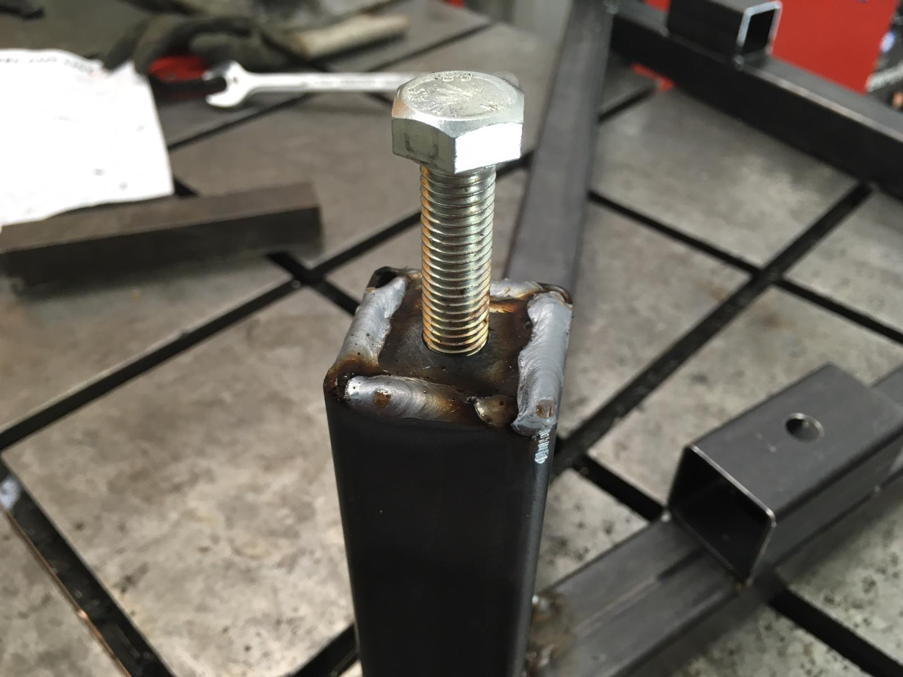

Evren Ucar / Independent design & engineering
The whole product.
The small details.
I help turn industrial design and manufacturing challenges into things that work.
From sourcing and prototypes to electrical design, wiring, assembly and testing, I work across the parts of a project that need to come together.
You work directly with me. We can move quickly, stay close to the details, and make decisions around what you actually need.
Tell me what you're working on ↗
01 / What I do
Design that considers
how it gets made.
I take an integrated approach to industrial design and manufacturing engineering. The shape, the mechanism, the wiring, the parts you can source and the way it goes together all affect each other.
- Product & industrial design
- Working through the idea, its purpose and the practical constraints.
- Prototyping & testing
- Building something tangible, trying it out and learning what needs to change.
- Manufacturing & assembly
- Sourcing, design for manufacture, and thinking through how the parts come together.
- Electrical & wiring design
- Considering electronics, connections and routing as part of the physical product.
- Product-to-market thinking
- Connecting design decisions to your goals and the steps needed to bring a product to market.
02 / How I work
Get familiar.
Get making. Keep talking.
I start by getting to know the project from all sides: what you're trying to achieve, what already exists, and what gets in the way.
Then I get involved wherever the work needs to happen. That might mean finding a component, developing a prototype, planning assembly or testing a detail that everything else depends on.
We work closely throughout. Short feedback loops keep the work moving and make room to adjust as we learn.
A few questions I tend to ask
- What does this need to do, and for whom?
- What can we test before committing to it?
- Can we source it, make it and put it together?
- Where do the design choices affect the rest of the product?

03 / Let's talk
What are you working on?
I'm Evren, a freelance industrial design engineer and TU Delft graduate based in the Netherlands. If you have a challenge in mind, send me a short note. A rough idea is a fine place to start.
evrenucar1999@gmail.com ↗